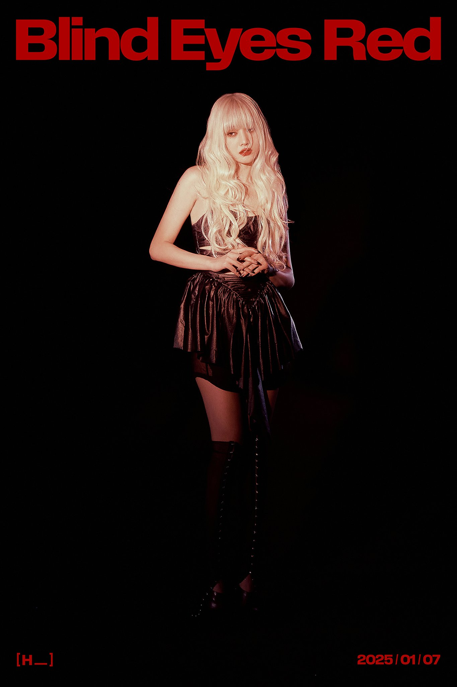

On December 3, 2024, it was reported that Minnie would be making her solo debut with an album releasing in January 2025.
Minnie released her debut extended play Her
on January 7. HER, MINNIE's debut solo album, is a deeply personal project that reflects her artistic growth.
She has been writing songs for years, slowly building a collection of tracks that capture her journey. Some songs date back four or five years,
making the album feel like a musical diary chronicling her life and emotions. Minnie of K-pop girl group (G)I-DLE makes her long-awaited solo debut with the album Her, showcasing her unique musical spectrum through seven self-written and -composed tracks.
“Since this is my first solo album in seven years, I worked really hard to prepare it. I'm very excited and looking forward to it. I'm grateful to the fans who waited for so long,” the Thai singer said n an interview .
Minnie shared that she has been writing songs for years, gradually building up material for her solo album.

On January 6, CUBE Entertainment dropped the music video for a solo track by Minnie titled 'Blind Eyes Red'.
Co-written by Minnie herself, the song is performed completely in English. The lyrics convey a sense of being consumed by thoughts of someone,
leading to a state of blindness and intense emotion. Phrases like "I can't see no more, I'm blind" and "my blinded eyes are red" suggest a loss of clarity and overwhelming feelings.
The song's dark and moody atmosphere is further emphasized by its sludgy tempo and trap beats, creating an almost claustrophobic vibe. Minnie's vocal performance, enhanced with stylistic autotune,
adds to this otherworldly ambiance. The music video complements these themes with dark and red-toned visuals, symbolizing passion and intensity. The use of red imagery aligns with the song's title and reinforces the emotional depth conveyed in the lyrics.
Overall, "Blind Eyes Red" explores the consuming nature of obsession and the emotional blindness it can cause, both lyrically and visually.